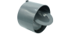

2022年
問題134 排水設備に関する次の記述のうち最も不適当なものはどれか．
（1）汚水槽の清掃は，酸素濃度が18%以上，かっ，硫化水素濃度がl0ppm以下であることを確認してから作業を行う．
（2）逆流防止弁は，排水通気管からの臭気の逆流を防止するために設置する．
（3）飲食店などのグリース阻集器内で発生する油分の廃棄物は，産業廃棄物として処理する．
（4）排水槽内で汚物などの腐敗が進行し，悪臭が発生する場合の対策として，排水ポンプのタイマ制御により1～2時間ごとに強制的に排水する．
（5）排水管に設置する床下式の掃除口の蓋には，砲金製プラグを用いる．
2022年
問題134 正解（2） 頻出度AAA
逆流防止弁は下水本管からの排水の逆流を阻止する弁である（2022-134-1図参照）．排水ますの流入口（上流側）などに取り付ける．
2022-134-1図 逆流防止弁

出典 関西化工株式会社
https://kansaikako-onlineshop.com/product.php?id=120
-(1) 酸素濃度が18%未満，硫化水素濃度が10ppmを超える状態は，酸欠防止規則の定める「酸素欠乏等」である．汚水槽の清掃が同規則の「第二種酸素欠乏危険作業（酸素欠乏症+硫化水素中毒）」に該当する場合は，酸素欠乏危険作業主任者の選任，特別教育，作業環境測定，換気，保護具の使用等の規則が定められている．
作業中も十分な換気，定期的な濃度検査を実施し，空気呼吸器，安全帯等を使用し，非常時の避難用具等も備えておく．
-(5) 掃除口には床上掃除口と床下掃除口があるが，常時排水にさらされる床下式の掃除口に鋼製のプラグがしてある場合は，耐食性の高い砲金製に取り替える．